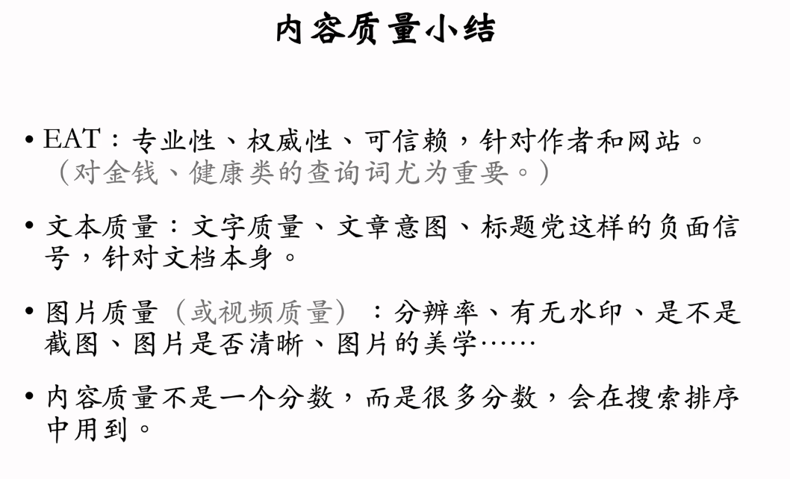
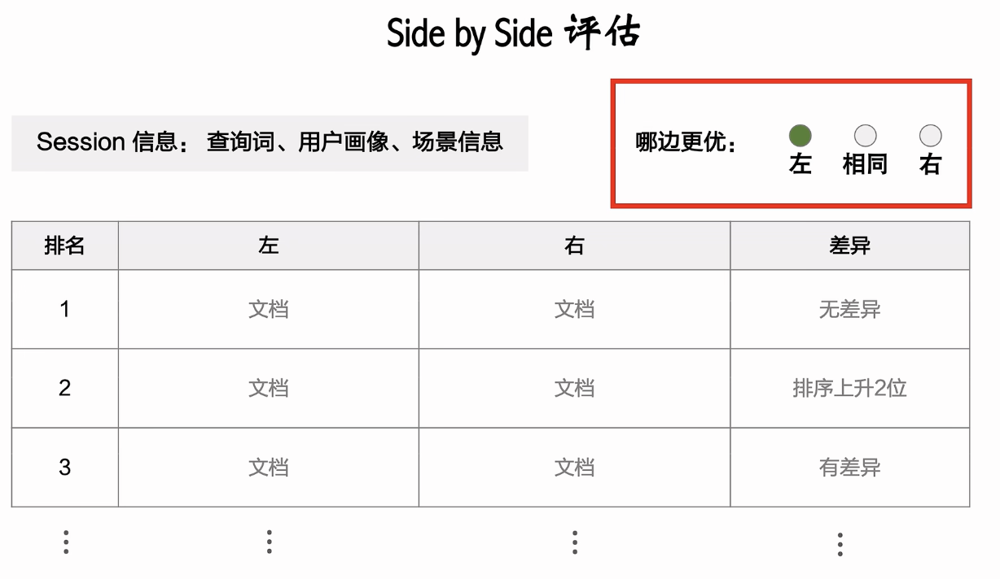

搜索引擎更像是NLP和推荐系统的结合, 在这之前我在两边都有一些基础, 所以这里再来学习一下搜推里面的搜索相关.
Background
data
文档点击: 文档曝光之后用户有点击.
文档点击率: 文档点击总次数/文档曝光总次数. (10%左右)
查询词点击: 用户对搜索引擎返回的文档有点击.
查询词点击率(有点比): 查询次点击总次数/搜索总次数. (70%左右)
查询词首屏点击: 用户点击搜索结果页首屏的任意文档就算"查询词首屏点击".
查询词首屏点击率(首屏有点比): 查询词首屏点击率/搜索总次数. (60%左右)
在对搜索引擎的评价指标里面, 有点比会比文档点击率更重要.
垂搜和通搜
垂搜
垂搜即针对某个行业的搜索引擎, 比如:
- 电商: 淘宝, 京东, amazon等
- 学术: Google Scholar, 知网等
- 本地生活: 美团, 饿了吗, 大众点评等
- 酒店机票: Booking, 美团, 携程, 东航等
- 招聘: LinkedIn, Boss直聘等
垂搜的文档相对结构化:
比如电商可以限定品牌, 卖家, 价格, 颜色等; 学术可以指定关键词, 作者, 期刊, 年份等.
同时垂搜一般用户目的明确:
比如饿了吗搜火锅肯定是找火锅店, 如果Boss直聘搜火锅则是找餐饮行业的工作相关.
通搜
覆盖面广, 并不限单个领域, 比如: Google, Baidu, 必应, 抖音等
在这些搜索引擎中, 文档来源广, 覆盖面大(比如google就会提供链接, 图片, 视频, 新闻等相关信息作为返回).
没有结构化信息, 检索难度很大.
用户使用通搜的目的不同, 很难判断用户的目的.
用户满意度
对于搜索引擎至关重要, 只有了解了用户对搜索引擎的评判标准我们才能更好地设计和改进搜索引擎.
业界的共识: 相关性, 内容质量, 时效性是影响用户满意度的三大因素.
对某些搜素引擎而言: 个性化, 地域性也会影响用户满意度.
通用搜索引擎迭代优化的目标是让用户更满意.
相关性
- 相关性是查询词q和文档d两者的关系.
- 相关性是客观标准, 不取决于用户.(大多数有背景知识的人认为相关则判定为相关)
- 相关性是语义上的而不是字面上的.(相关即d能够满足q的需求或提问, 而不一定必须包含q)
- q可能有多重含义, 而d只需要命中其中一种主要意图, 则可以算作(q, d)相关.
搜索引擎和推荐系统链路类似, 也有召回,粗排,精排.
召回完成之后, 候选文档量级为数万, 召回海选阶段用文本匹配分数或者双塔bert等模型粗略计算相关性.
粗排阶段候选文档数量为数千, 可以用双塔bert模型或者浅层交叉bert模型计算相关性.
精排阶段候选文档量级为百, 可以用交叉bert计算相关性.
内容质量
网站和作者的质量
主要评判标准为Google提出的EAT.
- 专业性(Expertise): 作者是否有专业资格, 比如搜治病相关, 搜索引擎给的回答是否是来自医生的回答.
- 权威性(Authoritativeness): 作者或者网站机构是否具有权威性, 不会被用户质疑, 比如你搜某个学校, 搜索引擎给你的应该是学校的官网,学校的Twitter或者wiki, 而不应该是留学中介.
- 可信赖(Trustworthiness): 作者或者网站的名声, 比如找某个诊所, 那么google地图,或者大众点评这种平台上面的评价都是可以信任的评价.
EAT在排序阶段也可以作为重要因子, 比如对于your money or your life这类query.
Your Money:
- 金融理财(保险, 投资, 保税, 贷款, 转账).
- 电商, 购物.
Your Life:
- 医疗健康(诊断建议, 用药建议, 医院介绍等)
- 法律等严肃主题(诉讼, 移民, 选举, 离婚, 收养)
- 对人生有重大影响的主题(高考, 择校, 出国, 就业)
对于这类问题, 搜索引擎应该给EAT很高的权重, 否则的话搜索引擎不仅仅在影响用户的体验和主观感受, 甚至会危害社会.
传统网络挖掘里面的PageRank的打分策略其实是基于网站之间的链接关系, 网站链接得越多分数就越高, 这其实也是一种权威性打分的例子.
文本质量
文字的质量: 文章写得好不好
- 文章的价值: 文章是否清晰, 全面, 事实是否准确, 信息是否有用.
- 作者的态度和水平: 写作是否认真, 写作的专业程度, 写作的技巧等.
然后针对用户不同的目的, 文本质量判定都有所不同:
比如我要找宠物饲养, 那么注意事项是否讲解清楚, 是否事实正确, 对作者是否有价值就是判定点; 我要找笑话, 那么笑话是否新颖好笑就是判定点; 我要找影评, 那么影评是否清晰全面有深度就是判定点.
文章的意图: 文章的目的是有利的还是有害的
比如一篇文章目的是诈骗, 那么哪怕它写得再好它也是有害的.
- 有利的: 分享有用的知识, 攻略, 亲身经历等.
- 有害的: 虚假信息, 广告, 散播仇恨, 男女对立等.
标题党, 图文不一致, 虚假引流标签, 堆叠关键词等. 这些按一般常理来说是应该被判定为低质量并被搜索引擎打压的.

需要注意文本质量不是一个分数, 而是很多个分数, 它们一起在搜索引擎里起作用.
对于其中每一个文本质量分数, 都有一个专门训练的模型, 比如BERT等NLP模型, CLIP等多模态模型.
然后文本分数都是静态的, 算一次即可, 在文章发布的时候或者检索的时候打分然后分数存入文档画像, 在之后搜索排序的时候直接从画像中读取分数即可.
时效性
文档的年龄在排序中有多大作用? 这个很大程度取决于查询词. 时效性一般被分类为: 突发时效性, 一般时效性(强/中/弱/无), 周期时效性.
- query = "最新房贷政策", "美元汇率" 这种就需要很强的时效性
- query = "泰国旅游"这种类似的旅游餐饮行业就不需要很强的时效性, 但最好也是1年内的.
- query = "搞笑萌宠"这种宠物相关, 又或者是疾病相关这种知识性的信息就完全不需要时效性
搜索引擎主要用数据挖掘和语义模型来识别时效性意图.
突发时效性
查询词涉及突发的新闻和热点事件. 如果查询词带有突发时效性, 那么用户大概率想看到最新的文档.
比如德国足球一般时间被搜索可能是用户想要了解德国足球的现状, 如果欧洲杯期间被搜索肯定是大家想要了解最新的资讯. 又比如用户一般情况搜索明星大概率是想要了解这个梦想是谁做了什么事, 如果明星被爆出新闻用户再去搜那大概率是想看新闻相关.
识别的方法: 数据挖掘为主.
- 挖掘站内搜索量激增的查询词(明星被爆出新闻, 肯定很多人去搜, 就会被数据挖掘系统检测到).
- 挖掘站内发布量激增的关键词(出了某个大新闻, 肯定很多人会发布相关资讯赚流量, 就会导致发布内容大量包含关键词, 从而可以被检测到).
- 爬取其他网站的热词(比如获取微博热搜, 搜索引擎就能知道最近什么东西收到用户的关注).
人不可以预知未来, 所以这种信息人也无从判断, 因此深度学习模型不管用(比如bert), 数据挖掘的方式为首选.
一般时效性
只看查询词字面就可以判断时效性强弱, 一般被分为(强/中/弱/无)四档.
例: 某品牌薅羊毛, 黄金价格(强), 楼市新闻(中), 在美国更新中国护照, 相机测评(弱), 苏联笑话, 82版射雕(无).
这种信息人自身也能通过语义和常识判断, 所以我们也可以用语义模型进行判断. 即可以使用bert
周期时效性
在某个周期里面的特定时间表现出突发时效性, 其他时间无时效性.
比如高考, 春晚等.
可以不做处理, 一旦表现出了突发时效性会被数据挖掘检索到. 不过不做周期时效性特殊处理会导致系统慢半拍.
优化点可以是数据挖掘出周期时效性然后做相应处理.
个性化
不同用户可能有不同的偏好, 搜索引擎可以根据用户的特征做排序.
可以用预估点击率和交互率来衡量用户对文档的偏好, 即个性化.
最终模型会结合相关性, 内容质量, 时效性以及个性化等信息对候选文档进行排序.
个性化这个信息会在宽泛信息查询的时候很有用.
查询词越宽泛, 就越需要个性化(查询宽泛, 返回的量就大, 比如搜索"头像", 其中只有小部分是用户感兴趣的; 如果查找精确, 那么信息大概率是用户感兴趣的, 比如"权力的游戏龙妈头像", 这种就可以不需要个性化).
预估点击率和交互率(即个性化)也有利于相关性和内容质量的提升.
- 相关且高质量的文档更容易被点击.
- 与bert等语义模型互补, 可以解决bad case的问题(如果搜索引擎返回bad case, 模型会判断返回具有低点击率可能, 从而pass掉).
- 即使非个性化排序, 点击率和交互率也有助于提升排序效果.
- 相关且高质量的文档更容易被点击.
评价指标
北极星指标
- 用户规模, 留存率(单个策略不容易提升规模和留存)
- 某些垂搜可能除了上面说的以外, 还有相对应的标准(比如电商平台的交易额)
用户规模
主要看日活用户数(DAU).
其中一个APP的DAU可能有搜索(Search DAU)和推荐(Feed DAU)两部分构成.
搜索渗透率 = Search_DAU/ DAU, 搜索的体验越好, 用户越喜欢用搜索功能, 搜索渗透率就越高
整体来说提升搜索日活人数和搜索渗透率有两部分:
- 提升搜索体验, 体验好了搜索用户数和搜索渗透率就上去了.
- 从推荐导流(产品设计相关)
用户留存
1. APP次x日内的留存: 次1留, 次7留, 次30留
比如2月1日有1亿用户使用APP, 这一亿人中有8千万在2月2-8日内使用了APP, 那么次7留就是 8/10 = 80%.
多功能APP可以拆功能看留存, 比如APP次n留, 搜索次n留, 推荐次n留.
2. APPx日内用户的平均使用天数: LT7, LT30
比如用户今天登入了APP, 未来7天(包括今天)一共登陆了4天APP, 那么此用户今天的LT7就是4.
我们对所有用户获取LT7然后求平均, 就是app今天的LT7.
LT7指标增长一定程度反映了用户体验的提升, 但是与此同时还得关注DAU, 如果DAU下降, 说明我们只是增加了用户使用APP的频率, 但是并没有能留住不活跃用户.
中间指标
前面说到了单种策略不容易提升北极星指标, 所以我们还需要一些中间指标. 它们的作用是: 对比与北极星指标它们更容易获得提升(容易观测); 同时它们和北极星指标正相关(它们得到提升, 北极星指标也能得到提升).
在此基础之上, 我们的优化方向就可以从北极星指标转变为中间指标, 中间指标大部分正向收益我们就可以把实验推全, 久而久之北极星指标就也能得到提升.
中间指标包括但不限于:
- 文档点击率
- 有点比
- 首屏有点比
- 平均首点位置
- 主动换词率
前三个写过了, 主要写下后面两个
1. 平均首点位置
- 一次搜索之后, 记录第一次点击发生的位置
- 如果没有点击或者首点位置大于阈值x, 那么首点位置记为x
- 对所有首点位置取平均.
- 首点位置靠前则说明用户需求文档排名靠前, 用户体验好.
优化搜索排序的时候, 我们可以主要关注有点比, 首屏有点比和平均首点位置, 它们和留存指标强相关,.
2. 主动换词率
如果用户找到了目标文档,一般并不会换词, 只有没有找到相关文档的时候才需要换词.
需要判断一段时间内两次搜索的查询词的相似度来判断是否是换词.
需要注意一下换词也分主动换词和被动换词.
主动换词: 一位女性用户想搜"键盘", 但是搜出来全是偏男性的键盘, 于是再次尝试"键盘 女性", 这就是主动换词. 主动换词率应该越低越好, 比如前面这个例子就是个性化做的不好导致的结果.
被动换词: 一位用户搜"权利的游戏", 搜索引擎识别到了错别字, 提醒"您是否想搜索: 权力的游戏?", 并且用户点击了, 这就是被动换词, 被动换词是好事, 说明搜索引擎智能.
3. 交互指标
即点赞收藏关注等行为. 这些指标通常表明了用户对文档有兴趣(强度大于点击).
问题: 交互指标稀疏, 百次点击可能只有个位数点赞, 这样波动就很大且AB测试不容易显著.
方法: 融分, 各种交互率做融分(比如加权), 然后最终分数作为中间指标, 这样分数更稳定且相对容易在AB测试中显著.
人工体验评估
人工评估搜索体验, 考察GSB, DCG等指标
Side by Side:
- 随机抽一批搜索日志(包含高频, 中频, 低频查询词, 权重需要调), 取其中的查询词,用户画像和场景, 运行新旧两种策略(固定其他变量, 仅策略发生改变), 得到两个不同的搜索结果列表.
- 对于每组返回, 人工评估两个列表(评估员不知道哪个新策略哪个旧策略, 只需要给出哪边整体返回更好即可).
指标 -〉GSB(Good Same Bad)
- 新策略优秀, 记为G
- 持平, 记为S
- 旧策略优秀, 记为B
比如评价300条查询词, GSB为50:220:30
实际操作界面:

缺点
- 过于主观, 评估指标和用户体验不一定一致
- 噪声大, 稳定性不如AB测试
- 人工评估速度慢, 影响开发迭代效率
- 成本高
- 个性化难处理, 标注员很难凭借用户画像准确判断用户的真实需求.
月度评估
- 每个月随机抽取一批日志, 每条搜索日志包括查询词q, 用户u, 场景c, 排名前k的文档d1, d2, ... dk.
- 标注员评估每一篇文档, 打分score(q, u, c, di).
- 用DCG评价一次搜索结果的好坏.
\[ DCG@k = \sum_{i=1}^k \frac{score(q,u,c,d_i)}{log_2(i+1)} \]
分子为分数, 分母为位置对分数的影响, 越靠前分数权重越高, 越靠后分数权重越低.
DCG为对一个搜索页整体的评价. 可以取n个DCG的均值, 作为月度评估.
- 可以是自我对比, 看是否优于往期的DCG
- 可以与竞争对手对比, 在对手的平台搜查询词作评估, 看DCG是否优于对手.
side by side和月度评估的区别
- 目的不同: 前者看策略是否可以推全, 后者判断搜索团队的整体水平.
- 指标不同: 前者指标是GSB, 后者为DCG.
- 争议性: 前者充满争议, 后者没有争议(大家都在用).
思考题
1. 为了评价用户体验, 整个搜索引擎的日均搜索次数是好的指标吗?
- 是一个好的商业目标, 因为广告收入和搜索次数正相关.
- 但是用户体验方面有争议, 日均搜索次数=DAU * 人均搜索次数, 而人均搜索次数却可能受换词的影响, 搜索次数越多用户体验越差.
可能的解决方法:
公式拆分: 日均搜索次数 = DAU * 人均搜索次数 = DAU * 人均搜索意图数 * 单意图搜索次数.
而单意图搜索次数又和主动换词律正相关, 且与用户体验负相关. 单意图搜索次数可以用主动换词率来拟合.
所以从策略和用户体验角度, 我们应该保证日均搜索次数/单意图搜索次数尽量大, 也即 DAU * 人均搜索意图尽量大, 也即使用人数多, 且每个人对搜索引擎的依赖性强.
2. 为什么LT比留存流行, LT有什么额外价值?
答: LT为加和, 次n留是OR, 加和相对比OR波动更小, 且更容易显著.
TODO
参考ShusenWang的视频